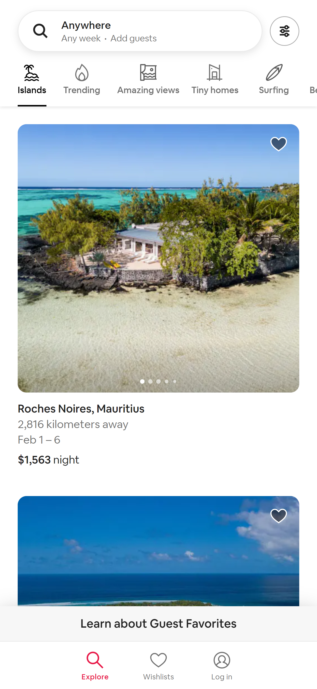

Visual Hierarchy
Airbnb
Airbnb's mobile web page illustrates visual hierarchy by using large, bold headings, contrasting colors, and strategic placement of elements. The prominent search bar and visually appealing images create a clear focal point, guiding users' attention and making it easy to understand the primary action of searching for accommodations.
Hick's Law
Amazon
Amazon's mobile web page embodies Hick's Law by offering a simple and streamlined user interface. The homepage presents users with a limited number of options and provides quick access to popular categories, reducing decision-making time. By minimizing the number of choices and presenting relevant content, Amazon enhances the user experience and facilitates efficient navigation.
Fitt's Law
Instagram's mobile web page exemplifies Fitt's Law by employing large and easily tappable elements. The primary actions, such as scrolling through the feed, liking posts, and accessing different sections, are strategically placed and designed to be easily reachable with a thumb. This design approach ensures that users can interact with the app effortlessly, reducing the effort required to perform common tasks.